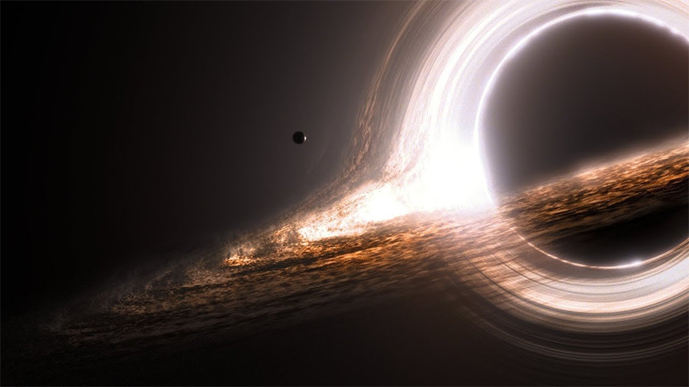

안녕하세요 라보엠입니다.
윤하의 특이한 제목의 노래가 나왔습니다. 바로 사건의 지평선 입니다.
윤하 - 사건의 지평선
사건의 지평선의 의미는?
사건의 지평선(Event Horizon)은 상대성 이론에서 나온 개념으로 내부에서 일어난 사건이 외부에 아무 영향도 미치지 않게되는 경계면을 가리킨다고 합니다. 이 현상은 블랙홀의 경계면에서 가장 쉽게(?) 볼 수 있는데 블랙홀 반대편의 빛을 포함한 어떤 정보도 관측할 수 없다고 하네요. 영화 인터스텔라에서 이 블랙홀과 사건의 지평선을 잘 표현했었죠. 이 블랙홀의 영상 표현을 위해 논문까지 학계에 냈었다고 합니다.
사건의 지평선 가사
1.
생각이 많은 건 말이야
당연히 해야 할 일이야
나에겐 우리가 지금 일순위야
안전한 유리병을 핑계로
바람을 가둬 둔 것 같지만
기억나? 그날의 우리가
잡았던 그 손엔 말이야
설레임보다 커다란 믿음이 담겨서
난 함박웃음을 지었지만
울음이 날 것도 같았어
소중한 건 언제나 두려움이니까
문을 열면 들리던 목소리
너로 인해 변해있던 따뜻한 공기
여전히 자신 없지만 안녕히
저기 사라진 별의 자리
아스라이 하얀 빛
한동안은 꺼내 볼 수 있을 거야
아낌없이 반짝인 시간은
조금씩 옅어져 가더라도
너와 내 맘에 살아 숨 쉴 테니
여긴 서로의 끝이 아닌
새로운 길모퉁이
익숙함에 진심을 속이지 말자
하나둘 추억이 떠오르면
많이 많이 그리워할 거야
고마웠어요 그래도 이제는
사건의 지평선 너머로
2.
솔직히 두렵기도 하지만
노력은 우리에게 정답이 아니라서
마지막 선물은 산뜻한 안녕
저기 사라진 별의 자리
아스라이 하얀 빛
한동안은 꺼내 볼 수 있을 거야
아낌없이 반짝인 시간은
조금씩 옅어져 가더라도
너와 내 맘에 살아 숨 쉴 테니
여긴 서로의 끝이 아닌
새로운 길모퉁이
익숙함에 진심을 속이지 말자
하나둘 추억이 떠오르면
많이 많이 그리워할 거야
고마웠어요 그래도 이제는
사건의 지평선 너머로
저기 사라진 별의 자리
아스라이 하얀 빛
한동안은 꺼내 볼 수 있을 거야
아낌없이 반짝인 시간은
조금씩 옅어져 가더라도
너와 내 맘에 살아 숨 쉴 테니
여긴 서로의 끝이 아닌
새로운 길모퉁이
익숙함에 진심을 속이지 말자
하나둘 추억이 떠오르면
많이 많이 그리워할 거야
고마웠어요 그래도 이제는
사건의 지평선 너머로
사건의 지평선 너머로

사건의 지평선 추천
앨범은 2022년 3월에 발매되었고, 별다른 홍보 없이 초기엔 반응이 없다가, 가을 대학 축제에서 부르며 입소문을 타 음원차트 역주행하며 음원차트 올킬에 이어 11월에는 SBS 1위까지 오르며 윤하의 대표곡으로 자리잡았습니다. 리페키지 앨범 발매 직후 인기를 얻기전 과학 크리에이터 궤도와 윤하의 이 노래에 대해 이야기하는 영상도 있네요.
저는 사건의 지평선 노래를 알게된게 앨범이 역주행하며 앨범 표지가 쌀국수와 비슷하다며 한동안 밈이 돌았는데 이걸 보고 찾아보게 되었습니다. 웃기는 표지와는 다르게 너무 진지하고 멋진 노래에 빠져들어 무한 반복해서 들었었습니다. 가사는 슬프지만 이별 후 우리의 시간은 참 고마웠고 서로의 미래를 응원하는 힘찬 윤하의 목소리가 참 좋았죠. 과학 용어인 사건의 지평선을 가사에 적용하여 쓴게 참 대단하다고 생각했습니다. 추천 드립니다.